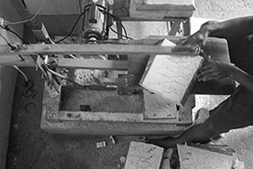

Doucement...
DOUCEMENT..."Pole Pole" signifie doucement, petit à petit, en Swahili. Le fabriquant japonais T-Lab a ainsi à coeur de transmettre la chaleur du bois et du travail manuel. Le design original, tout en rondeur et en douceur, rend ces animaux très attachants.